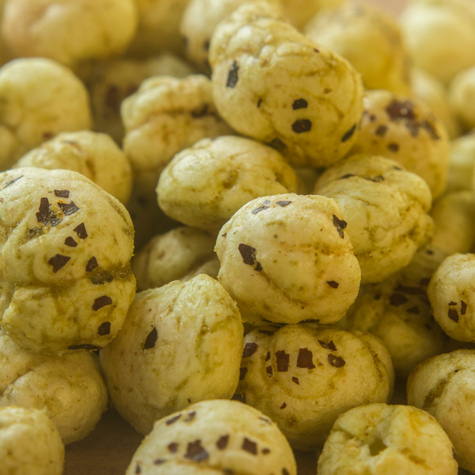
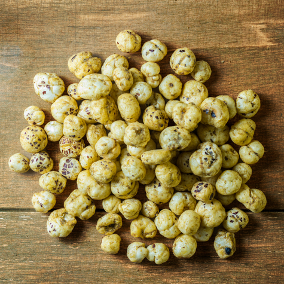

Makhana
Makhana, also known as fox nuts or lotus seeds, is a nutritious and popular snack in many parts of India. It comes from the seeds of the lotus plant and is commonly roasted for consumption. Makhana is low in calories and high in protein, fiber, and essential minerals like magnesium, potassium, and phosphorus, making it a healthy option for weight management and heart health. It is also gluten-free and easy to digest, making it suitable for people with dietary restrictions. Often consumed during fasting or used in traditional Indian dishes and desserts, makhana is valued for both its taste and health benefits.


